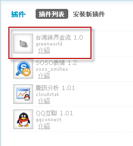
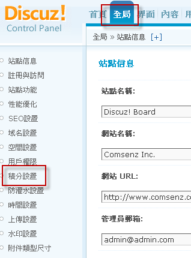
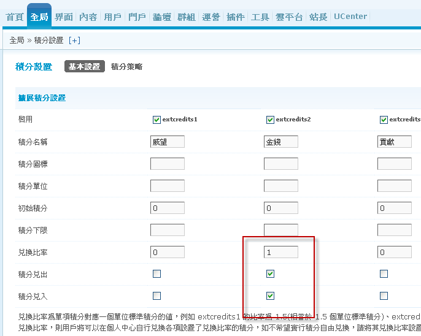
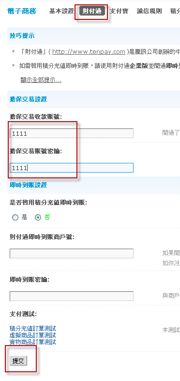
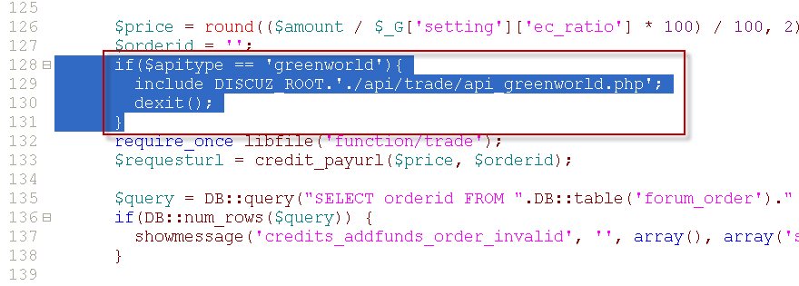
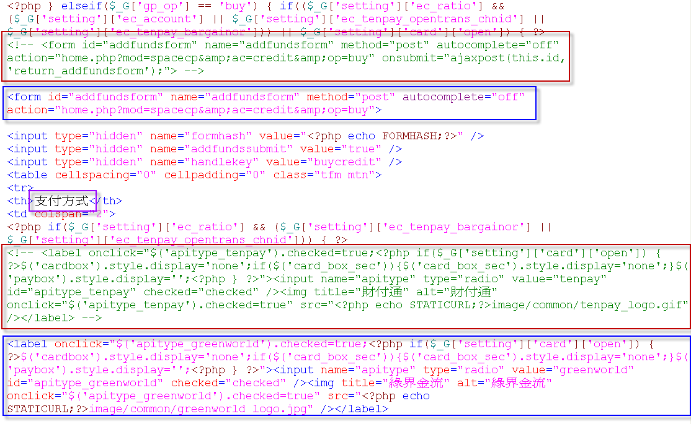
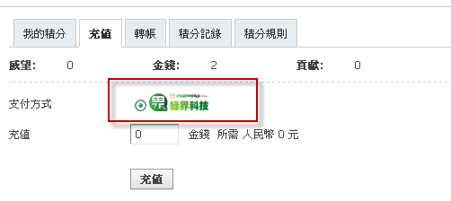

綠界科技線上金流模組安裝教學
Step 1 - 插件安裝說明
此模組包含的付費模式有：
1. PayPal
2. WebATM
3. 虛擬帳號
4. 超商代碼繳費(萊爾富 & 全家 & OK 便利商店三合一代碼繳費)
5. 7-Eleven iBon超商代碼)
6. 超商條碼繳費
7. ECPAY 線上刷卡
8. 歐付寶(AllPay)線上刷卡
9. 銀聯卡(UnionPay)
10. 支付寶(Alipay)
整合綠界B2C電子發票平台, 可於金流完成後自動開立電子發票
請先安裝好Discuz論壇，安裝教學
注意：以下每個步驟皆是必需執行的，請不要忽略某一步驟，以免無法使用，謝謝。
1 解壓檔案後，此時您可看見3個資料夾

2 將這3個資料夾利用ftp上傳至您所安裝的discuz主機上，並且覆蓋
3 使用管理者帳號登入至管理中心，選擇『插件』後，再選擇『安裝新插件』

4 按下右邊的安裝，成功後即會出現如下圖所示

5 啟用綠界金流插件，按下右邊『啟用』，啟用後，會如下圖示，左側選單多一個綠界金流的插件

6 設定綠界金流的資料，依照右側說明，輸入您在綠界ECBank所申請的商店代號、加密私鑰，並填入您所要充值的收款方式後，按下提交

7 請至『全局』>『積分設置』設定您論壇的交易積分方式，在這以金錢為例


8 請至『運營』>『電子商務』>『基本設置』設定您論壇的積分兌換方式

9 開啟充值功能，請至『基本設置』的左側『財付通』，在財付通設置中的賬號與密鑰，請隨便輸入後，按下提交

10 修改檔案並利用ftp上傳至相對應的資料夾
一 請開啟source\language\lang_template.php，在第25行插入'apitype_greenworld' => '綠界金流',

上傳至相對應的資料夾中覆蓋
二 請開啟source\include\spacecp\spacecp_credit_base.php，在128行插入如下圖所示的反白程式碼

上傳至相對應的資料夾中覆蓋
為方便大大們copy，特地將程式碼文字化如下，請直接選取後copy貼上即可
if($apitype == 'greenworld'){
include DISCUZ_ROOT.'./api/trade/api_greenworld.php';
dexit();
}
三 產生樣版檔，請先至前台，積分 > 充值，會看見財付通的付款方式，如下圖所示
* 注意：若您有更換新的模板或是在您的後台『更新緩存』後，此步驟必需再做一次

請用ftp連線至主機中，利用ftp下載並開啟data\template\X_X_home_spacecp_credit_base.tpl.php，利用搜尋，請先找到『支付方式』這4個字，

請註解2段程式碼如上圖的紅色框(註解語法<!-- -->)，並在各自註解的下方增加程式碼如上圖的藍色框
為方便大大們copy，特地將程式碼文字化如下，請直接選取後copy貼上即可
第1段
<form id="addfundsform" name="addfundsform" method="post" autocomplete="off" action="home.php?mod=spacecp&ac=credit&op=buy">
第2段
<label onclick="$('apitype_greenworld').checked=true;<?php if($_G['setting']['card']['open']) { ?>$('cardbox').style.display='none';if($('card_box_sec')){$('card_box_sec').style.display='none';}$('paybox').style.display='';<?php } ?>"><input name="apitype" type="radio" value="greenworld" id="apitype_greenworld" checked="checked" /><img title="綠界金流" alt="綠界金流" onclick="$('apitype_greenworld').checked=true" src="<?php echo STATICURL;?>image/common/greenworld_logo.jpg" /></label>
修改好後，先將主機中的該檔刪除，並將修改好後的檔案上傳至相對應的資料夾
按下F5重新整理你的網頁，此時即可看見綠界的支付方式
